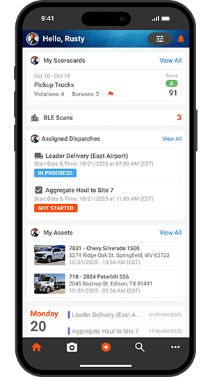

Fleet management app for a US logistics provider
Elinext built mobile workflows for driver tasks and live location streams with React Native and TypeScript.
Read case studyTenna is adding senior engineers while the platform handles more field, shop, device, and data work across one mixed-fleet system customers trust daily in the field and office.
Why we are here: we saw the Senior Back-End Software Engineer signal, plus public data and front-end roles. That points to platform scale, not simple hiring backfill.

Our read
Tenna is scaling a connected equipment platform, not a small app. The backend role names API design, database tuning, performance, and microservices. The Principal Data Engineer role adds IoT ingestion, real-time data, and AI-ready data flows. Android reviews also point to field risk, like inspections not loading and crashes. If these paths stay fragile, field teams lose trust and senior engineers get pulled into support.
Where we'd start
Start with inspections, scan, offline sync, login recovery, and dispatch updates. Add regression tests around these paths before new roadmap work lands.
Review stale asset locations, device offline states, and retry rules. Define clear user states for field crews when cellular data is weak.
What we'd do
A dedicated squad works under Tenna's Product Owner or PM for a six-week pilot.
Map inspections, scanning, offline maintenance, dispatch, and login recovery from mobile action to backend state.
Add tests around asset state, stale locations, retry rules, and service contracts for field workflows.
Validate IoT ingestion, replay behavior, data freshness, and real-time distribution before wider AI work starts.
Show working fixes, test results, and risks to Tenna product and engineering leaders each week.
Who is Elinext
Elinext is a full-cycle software development company, active since 1997, with about 700 in-house specialists and no freelancers. We build web, mobile, backend, QA, data, AI/ML, and DevOps teams for clients in the US, Europe, Asia, and Australia. We hold ISO 9001 and ISO 27001, which matters for field data and customer trust. Our named customers include Siemens, Broadcom, Volkswagen, TRUMPF, and TUI. For Tenna, we would bring a small squad that supports your leaders and keeps ownership inside your team.
Proof
Elinext built mobile workflows for driver tasks and live location streams with React Native and TypeScript.
Read case study
Elinext improved barcode workflows, Android scanning, ERP integration, service logic, logging, and monitoring.
Read case study